|
|
|
5.2.1 Properties
You can open the form
properties by clicking this button ,
,
and form properties setting panel will show as below:
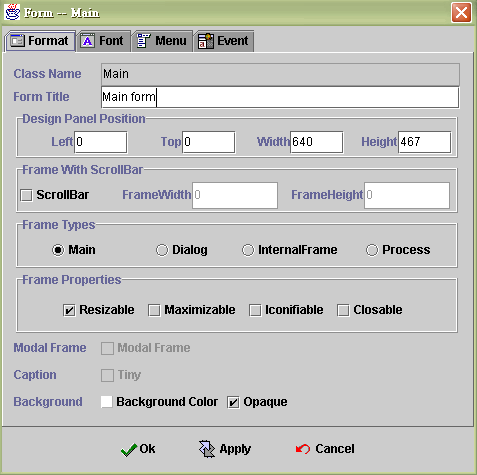
Format
Class Name : Name of the class that you design now.
Form Title : Caption of the form, and can be changed any time by using the function SetProp()
Design Panel Position
Left : Beginning position is zero.
Top : Beginning position is zero.
Width : Form width.
Height : Form height.
Frame with scrollbar
Scrollbar : Add scrollbar on the form.
Frame width : Scrollbar max width.
Frame Height : Scrollbar max height.
Frame Types
Main : The application main form. It is always in below.
Dialog : This type will hold the application logic after the dialog finished.
Internal frame : The form could cover by other form.
Process :
Frame Properties : Check the check box will become effective.
Resizable : In the run time, you can change the form size. Uncheck this check box, the form will not be change size.
Maximizable : It will add one icon on caption. Click it then the form will fill the screen.
Iconifiable : It will add one icon on caption. Click it then the form will reduce become a icon.
Closable : It will add one icon on caption. Click it then the form will close.
Modal Frame : This type will also hold the application logic after the modal form finished. But it always stay on top.
Caption Tiny: The form caption will be minimized. There will be not title showed on the form.
Background
Background color : Set the color. Just click the button then choose the color you need.
Opaque : Not limpid. Check it then you will not see the background.
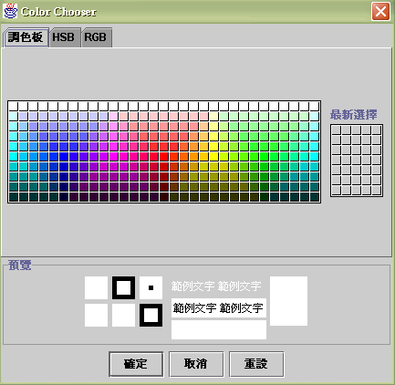
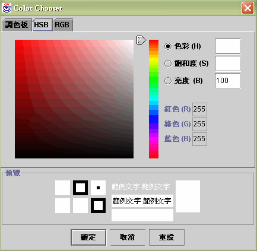
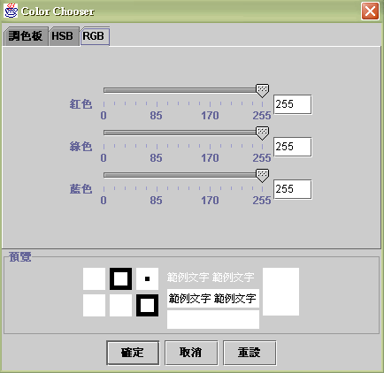
Font
Font Name : Choose one font.
Size : Choose the font size.
Style
Bold
Italic
Color :
Foreground : Click the color cricket and choose foreground color.
Background : Click the color cricket and choose background color.
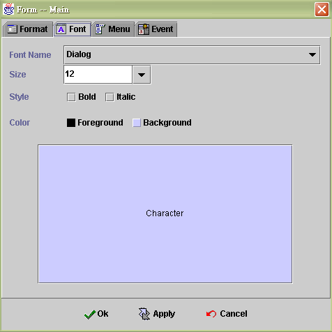
Menu
Menu Text : The text displayed on the menu.
Menu Tips : When the mouse move to the text, it will show the tips.
Display Icon : Choose one icon and it will display before text.
Invoke Form : defined the form which will be opened when click the menu text .
Execute Event : This execute event is belong to main form. So only the invoker form call himself, this part will act. When you click the menu text, it will action the event.
Mnemonic : ALT + Key 給最上層的 menu bar 使用
Keystroke : Quick button ( ALT + Key ).
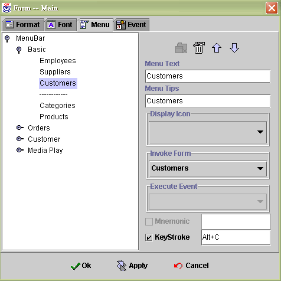
Menu type :
Menu : Root 可以增加子目錄, 樹狀結構
Menu Item : Sub menu 為目錄最後一層的子節點
Separator : One line and divide menu into parts.
Delete
Up and down : change the order of the menu text. Click the icon.
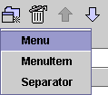
Event
Before open : Before datasource open, it will do the event first.
After open : After datasource open, it will do the event.
Final : When you choose to close the form, it will do the event first then close form.
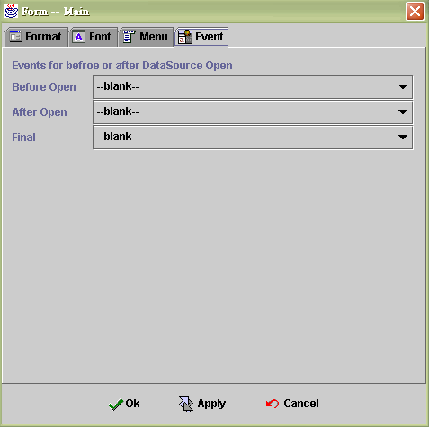
5.2.2 Create Menu
開始建立 menu( 功能列 ) 時, 先按 Create 按鍵 ( 下圖紅色框住的按鍵 ), 然後輸入 menu 的文字, 功能列下方能建立 Menu item, 而目錄本身不可以開啟 form 或 執行 event
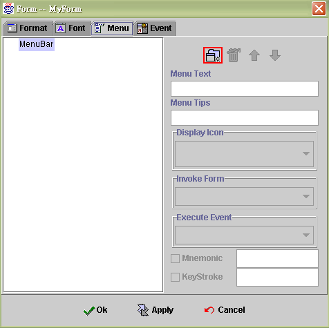
如果要建立和 menu1 同一層的 menu 時, 請標示 menu bar 在按新增按鍵, 則可以新增一個同一層的功能列
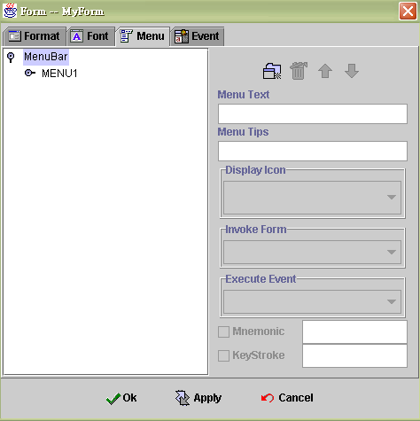
如果要在 menu1 的底下建立可以開啟 form 的節點時, 可以先標示 menu1 後, 在新增的按鍵選項中選擇 menu item( 功能選項 ), 再輸入文字描述並選擇圖形或所要開啟的 form
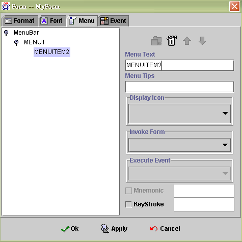
當然你也可以在新增 menu1 下方的 menu, 請標示 menu1再按新增按鍵, 選擇 menu 則可以新增一個子功能列
或是選擇一個分格線來分隔不同的功能選項
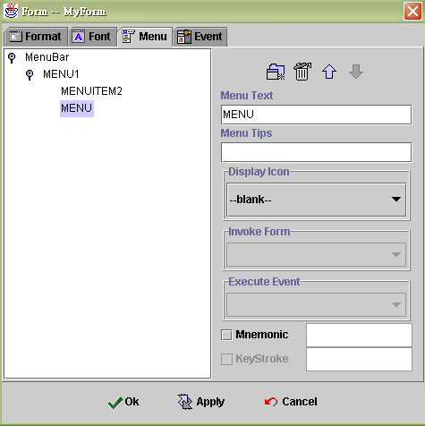
|
|
|
|
Copyright © 2001~ 2004 Probe.com.tw . All Rights Reserved.
Questions, comments, and suggestions to Service@probe.com.tw